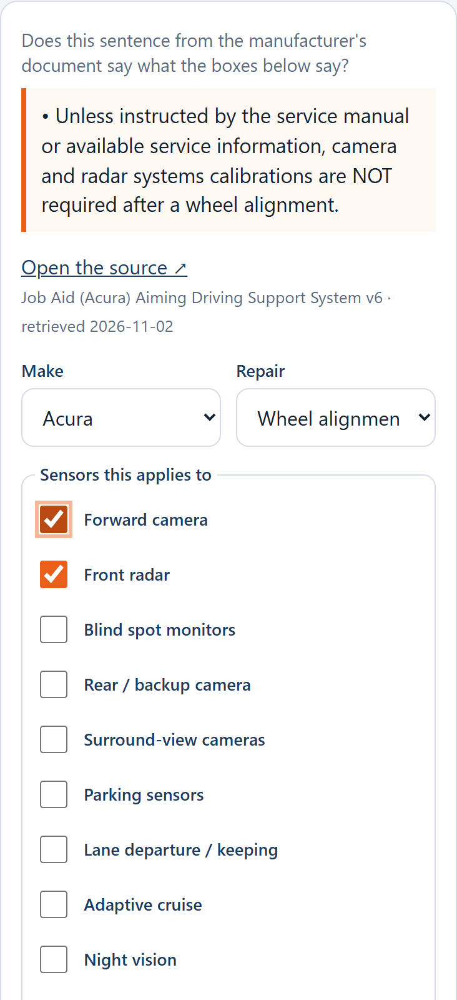
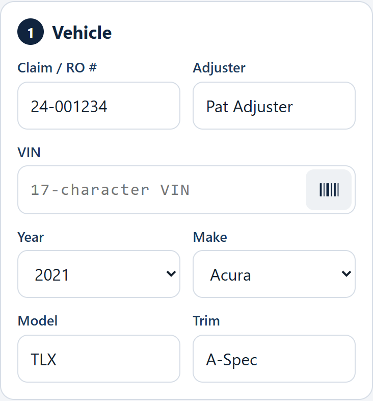
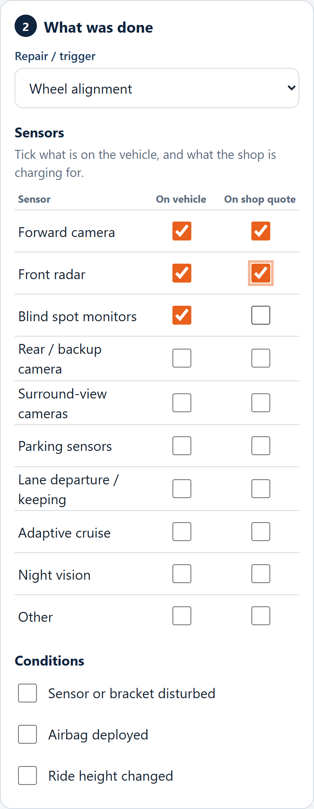
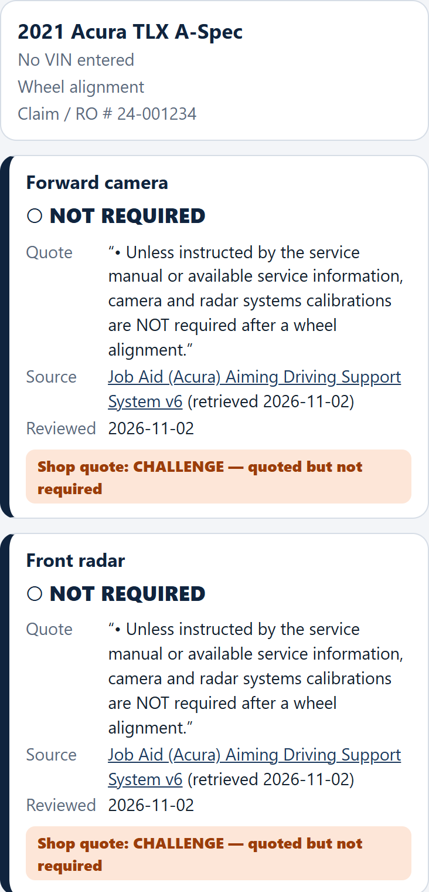
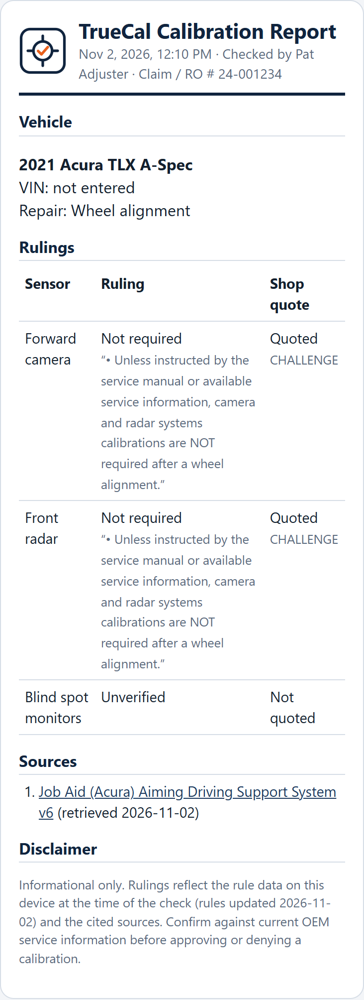

Is that calibration really needed? Get an answer with its source.
TrueCal runs on your phone like any other app. Enter the vehicle and the repair that was done, say which sensors are on the car and which ones the shop is charging for, and TrueCal tells you whether each calibration is required, not required or self-learning. Every answer shows the manufacturer's own sentence and a link to the document, so you can check it yourself.
Everything stays on your phone. Your checks, photos and review answers are saved on the device as you go. Only the VIN is sent out, to the free US government VIN lookup, and that needs internet.
TrueCal only gives answers that a person has checked. Before the first check, review the findings it has collected from manufacturer documents. You can do a few now and more later.
Open the menu ☰ and tap Review findings. Each card shows one sentence found in a manufacturer document.
Skip for now moves on without deciding. Undo last takes back your last answer. The Kept and Hidden tabs list your answers; you can hide a kept one or restore a hidden one at any time. Nothing is ever deleted.

When in doubt, say No. A hidden finding only means TrueCal says Unverified for that case. It never gives a wrong answer from something you rejected.
From the home screen tap + New check.
Enter the Claim / RO # and your name. For the VIN, tap the barcode icon inside the VIN box and point the camera at the barcode (usually on the sticker inside the driver's door). TrueCal reads it, checks it, and fills in the year, make, model and trim. If the scan won't work, tap Use a photo or Type VIN.
Compare with the car. The VIN lookup is very good but not perfect, and it never overwrites what you typed without asking.

Choose the repair (for example Front bumper R&I, Windshield replacement or Wheel alignment).
In the sensor list, tick On vehicle for each sensor the car has. Tick On shop quote for each calibration the shop is charging for. The VIN lookup may pre-tick sensors that are standard equipment; confirm them on the car.
Under Conditions, tick anything that applies, such as Sensor or bracket disturbed.
Tap 📷 Add photo to attach pictures, and Dictate note or type in the Notes box.
Tap Get ruling.

Each sensor gets one card. It shows the result, the exact quote from the manufacturer, and a link to the source with the date. Tap the link to read the original.
| Result | Meaning |
|---|---|
| ● Calibration required | The manufacturer says to calibrate. The method (static, dynamic or both) is shown when the source states it. |
| ○ Not required | The manufacturer says no calibration is needed for this repair, often "unless the sensor or bracket was disturbed". |
| ◐ Self-learning | The system recalibrates itself in normal driving. |
| ? Unverified | No reviewed source covers this vehicle, sensor and repair. This does not mean calibration is unnecessary. Ask the shop or the manufacturer. If you get a requirement from the shop or a dealer, tap Add our own record to save it with a reference. It is always labelled not OEM-verified, and a manufacturer source overrides it. |
If you ticked On shop quote, each card also compares the quote with the ruling:
| Label | Meaning |
|---|---|
| MATCH | Required, and the shop quoted it. |
| CHALLENGE | The shop quoted it, but the ruling says it is not required. Ask the shop to justify it. |
| MISSING | Required, but not on the quote. |
| ASK FOR PROOF | Quoted, but there is no source either way. |

On the ruling screen tap Report. The report lists the vehicle, each ruling with its quote, the sources with dates, your notes and photos, and a disclaimer.
Past checks are on the home screen under Recent checks, and See all lets you search by VIN, claim, make or model.

| Problem | Try this |
|---|---|
| Everything says Unverified | No rules have been kept yet, or none match that make, sensor and repair. Open Review findings and keep some, and check the make and repair. |
| VIN scan won't read | Hold steady with the barcode filling the frame, try Use a photo, or type the VIN. Not every VIN has a barcode (the dashboard plate usually doesn't). |
| Year, make and model didn't fill in | The lookup needs internet and doesn't know every VIN. Enter them by hand. |
| Camera or microphone doesn't start | Check the browser's permission for TrueCal in your phone's settings. |
| App looks out of date | Menu ☰ → Check for updates. |
Checks, photos and your review answers are stored only on your phone. TrueCal sends the VIN (not your name, claim number or photos) to the free US government VIN decoder to fill in the vehicle. Export review decisions in the menu saves your yes / no answers to a file you can keep or share.